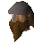

Dwarf

| Config name | mcannonguard |
| NPC id | 206 |
| Combat level | 10 |
| Hitpoints | 16 |
| Attack / Strength / Defence | 8 / 6 / 9 |
| Options | Talk-to, Attack |
| Wander range | 5 tiles from spawn |
| Max range | 12 tiles from spawn |
| Defined in | scripts/quests/quest_mcannon/configs/quest_mcannon.npc |
| Bonuses | Attack bonus 5, Strength bonus 7, Stab def 3, Slash def 4, Crush def 4, Magic def 2, Range def 3 |
Dwarf
A Dwarf guard.
Show all 12 spawns on the world map → Open in knowledge graph →
Drops
No drops recorded.
Locations
| Area | Coordinates | Level | Count | Map |
|---|---|---|---|---|
| Baxtorian Falls | 2554, 3465 | 0 | 1 | view |
| Baxtorian Falls | 2554, 3469 | 0 | 1 | view |
| Baxtorian Falls | 2564, 3456 | 0 | 1 | view |
| Coal Trucks | 2572, 3456 | 0 | 1 | view |
| Dwarven Mine | 3009, 3458 | 0 | 1 | view |
| Dwarven Mine | 3015, 3459 | 0 | 1 | view |
| Dwarven Mine | 3016, 3448 | 0 | 1 | view |
| Dwarven Mine | 3016, 3450 | 0 | 1 | view |
| Dwarven Mine | 3017, 3447 | 0 | 1 | view |
| Dwarven Mine | 3018, 3456 | 0 | 1 | view |
| Dwarven Mine | 3021, 3447 | 0 | 1 | view |
| Dwarven Mine | 3027, 3457 | 0 | 1 | view |
Dialogue
PlayerHello.
DwarfDon't distract me while I'm on duty! This mine has to be protected!
PlayerWhat's going to attack a mine?
DwarfGoblins! They wander everywhere, attacking anyone they think is small enough to be an easy victim. We need more cannons to fight them off properly.
PlayerWell, I've done my bit to help with that.
DwarfYes, I heard. Now please let me get on with my guard duties.
DwarfA new cannon can cost 750,000 coins, and the ammo isn't easy to get, but they do up to 30 hitpoints of damage with each shot. When you've got an important mine like this one to protect, it's worth the expense.
PlayerThanks for the information.
DwarfYou're welcome. Now please let me get on with my guard duties.
PlayerAlright, I'll leave you alone now.
Quests
Referenced in scripts
scripts/quests/quest_mcannon/scripts/npcs/mcannonguard.rs2